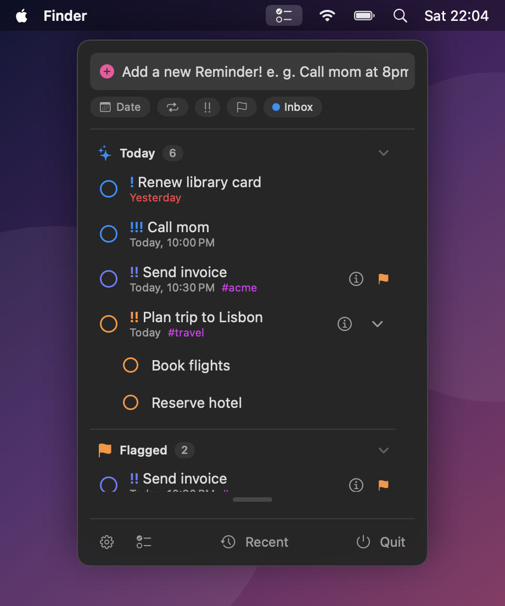
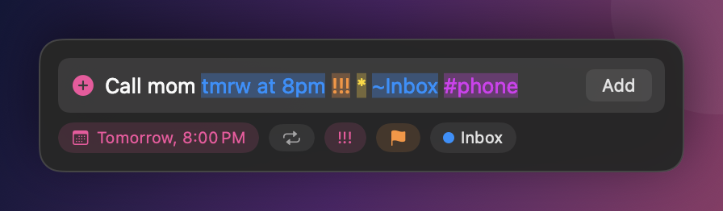
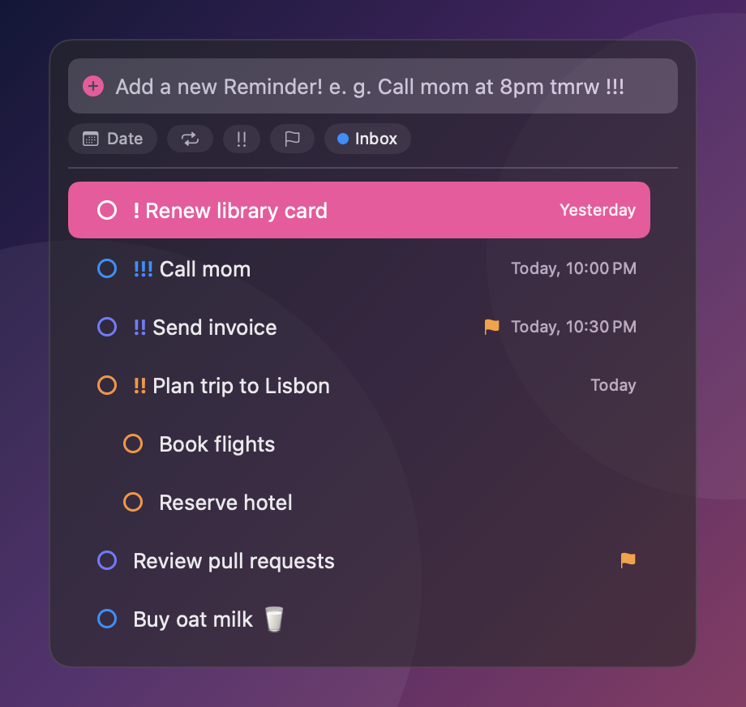
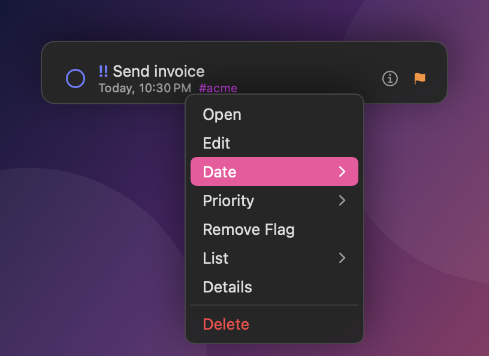

Your reminders, one click from the menu bar.
Remidor sits next to the Reminders app. See what's open at a glance, add reminders by typing a sentence, and focus on one task with a timer.
Free and open source. macOS 14 or later, Apple Silicon and Intel.

What it does
Everything stays in sync with the Reminders app, and with iCloud, because it works on the same data.
Menu bar dropdown
Open reminders grouped by list, with Today, Scheduled, Flagged and All. Keep your own manual order and list sections from Reminders, drag to reorder, fold lists and sub-tasks shut, resize the window.
Type to add
Write "call mom tmrw at 8pm !!!" and the date, priority, list, tags and flag are picked out for you.
Focus timer
Click a task, choose how long, and watch the countdown in the menu bar. Extend it or check the task off when time is up.
Global shortcuts
Press ⌥Space anywhere to add or pick a task. ⇧⌥O opens Reminders. Both can be changed.
Right-click edits
Change a task's date, priority, flag or list without opening Reminders. Delete asks before it does anything.
Undo
Checked something off by accident? Undo it from the banner, from ⌘Z or from the Recent menu.
Say it the way you'd say it
Remidor highlights what it understood while you type, and every piece also has a button, so the mouse works just as well.
| Date | tmrw at 8 fri in 20 min |
| Repeat | every sunday ev 2 weeks every weekday |
| Priority | ! !! !!! |
| Flag | * |
| List | ~Work ~"My List" |
| Tag | #errands |

A quick bar for anywhere
Press ⌥Space over whatever you're doing. Type to add a reminder, or to find one and start working on it. Shift+Return checks the highlighted task off.

Edit from the right-click menu
Set a date, change the priority, flag it or move it to another list. The same menu opens the task in Reminders or shows its details.

Private by design
Remidor reads and changes reminders through Apple's EventKit and has no analytics. The only network request is an optional once-a-day check for a newer release, which sends nothing about you or your reminders and can be turned off. It runs in the App Sandbox.
Install
- Download the zip from the latest release and unzip it.
- Drag Remidor.app into your Applications folder and open it.
- macOS will say it can't verify the app, because Remidor isn't notarized by Apple (that needs a paid developer account). Open System Settings → Privacy & Security, scroll down and click Open Anyway. You only do this once per version.
- When macOS asks for access to your reminders, choose Allow.
Prefer the Terminal? This removes the download flag instead:
xattr -dr com.apple.quarantine /Applications/Remidor.app